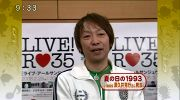
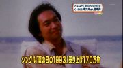
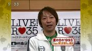
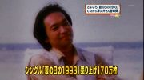

2009年
class archive ｜non-profit, silent archive
 



今月2日にすい臓ガンのため49歳で逝去しヒット曲「夏の日の1993」などで知られる男性デュオ・classの津久井克行さんの音楽葬が12日、東京・青山葬儀場で営まれ関係者やファン1500人が参列した。音楽葬終了後にはメンバーで葬儀委員長を務めた岡崎公聡が取材に応じ「classは（元メンバーの）日浦孝則さんと（津久井さんが）始めたもの。津久井さんが亡くなった以上、ここでお別れした方がいい」と故人を偲ぶと共に、ユニットの解散を宣言した。
今年2月に体調不良を訴え、その後の診断で短い余命を宣告された津久井さんは、自ら歌手活動を最後までやり通すことを選択。最後までそばでメンバーとして支えた岡崎は「（津久井さんは）後悔はしていないと思う」と話したが、「調子が悪くなると黄疸が目や顔に出たので、黄色いサングラスをプレゼントした。（死に関して）そういう話はしていませんでしたね。明日、50歳の誕生日を迎えるハズだったのに、残念で仕方ない」と肩を落とした。
会場は、故人が好きだった色とヒット曲「夏の日の1993」のアンサーソング「冬の日の2009」のイメージに合わせて、かすみ草など白系の花3000本以上を敷き詰め、中央には最後のライブとなった8月の神宮外苑の花火大会でのライブ写真、さらにレコーディング風景やスタッフから贈られた自画像などを飾った。場内外に設置されたモニターからは、ラストライブの映像や、今春リリースしたアルバムに収録された「桜」の未完成音楽ビデオなどを上映。累計売上げ115万枚を記録したヒット曲「夏の日の1993」などが流れるなか、業界関係者に混じって日浦をはじめ親交のあった元プロボクサー・薬師寺保栄、プロゴルファー・丸山茂樹、歌手の上田正樹が参列した。
終了後、取材に応じた日浦は「彼はライバルというか“戦友”でした。お互いソロ活動をしていたので、ブログなど遠くから見ていた。2月に友人から（津久井が）ガンだと聞いたが…会ったのは1年前のライブでの打ち上げが最後。まぁ、周りに（ガン闘病の）人が多いですしね。（思い出としては）『夏の日の1993』は事務所社長から『日焼けサロンにいけ！』とか『ミュージックステーションって待ち時間が長いよなぁ』とか思ったけど、もうそういう（思い出が）作れないのは寂しい。ここから先は、津久井の分まで歌い続けていきたい」とコメント。
また、知らせを受けて亡くなる直前に入院先の病院に駆け込んだという上田は「（床で）津久井、頑張れ！ と叫んだ。でも、もう彼は生まれ変わってると思うよ。15年、20年後シンガーとなって会ってると思う。だから僕は、長生きする。（12月に）長野でライブをやる予定だったけど……。残念ですが、一生懸命やったと思いますよ」と声を震わせながら語っていた。
そのほか、ゴルフコンペで岡崎、津久井さんと共に楽曲を歌唱したメジャーリーガー・松坂大輔投手からは「津久井さん、お疲れ様です。ゆっくり休んで、また、天国で歌ってください」という趣旨のメッセージと、サインが入った亡くなった日の翌日（現地時間）の登板時に使用したボールが届いた。
classの津久井さん音楽葬でお別れ。現メンバー解散を宣言<引用:日テレNEWS24>今月2日にすい臓がんで亡くなった男性デュオ、classのボーカルの津久井克行さん（享年49）の音楽葬が12日、都内で営まれた。遺作となった楽曲「桜」の未完のプロモーションビデオが流れる中、1500人が故人をしのんだ。葬儀委員長を務めたGMAエンタープライズの代表取締役でclassの新メンバーの岡崎公聡は「津久井は『ステージで倒れても歌いたい』と言い切った」と涙をこらえて語り、「きょうでclassとは永遠のお別れとしたいと思います」と事実上の解散を宣言した。ヒット曲「夏の日の1993」をデュエットした元メンバーの日浦孝則（49）は「これでやっと、僕と津久井の手にclassが返ってきた。津久井の分まで、僕が歌わないと」と沈痛な口調で語った。
ｃｌａｓｓ津久井克行さん音楽葬 松坂がボール贈る<引用:サンケイスポーツ>２日にすい臓がんで死去した男性デュオ、ｃｌａｓｓの津久井克行さん（享年４９）の音楽葬が１２日、東京・青山葬儀所で営まれ、ファンや関係者ら約１５００人が参列した。 祭壇には、最後のステージとなった８月の東京・神宮花火大会での写真が飾られた。ヒット曲「夏の日の１９９３」が流れる中、０８年４月に新加入した岡崎公聡（４９）が、「津久井が愛したｃｌａｓｓはこの日で、ファンと永遠のお別れをします」と涙ながらに宣言。親交のある米大リーグ・レッドソックス、松坂大輔投手（２９）が訃報を知り、「天国でもたくさん歌って下さい」などと書いたボールを贈ったことも明かした。 音楽葬にはｃｌａｓｓ元メンバーで歌手、日浦孝則（４９）のほか、歌手、上田正樹（６０）らが参列した。
ｃｌａｓｓ津久井克行さん：届け！松坂魂のウイニングボール<引用:スポニチ>「夏の日の１９９３」のヒットで知られ、２日に膵臓（すいぞう）がんのため死去した男性デュオ「ｃｌａｓｓ」の津久井克行さん（享年４９）の音楽葬が１２日、東京都港区の青山葬儀所で行われた。
先輩歌手の上田正樹（６０）ら約１５００人が参列。海外からは親交のあったボストン・レッドソックス松坂大輔投手（２９）が「天国でたくさん歌って下さい」と書いたサインボールが届けられた。津久井さんと松坂の出会いは昨年秋。新生ｃｌａｓｓのメンバーで所属事務所代表の岡崎公聡（４９）が松坂と“ゴルフ仲間”だったため、一緒に食事をして知り合った。
昨年１２月１５日には「第１０回ＧＭＡプロ・アマチャリティーゴルフ」にともに参加。授賞式のステージでは、３人で「夏の日の１９９３」をカラオケで仲良く歌った。
津久井さんが亡くなった日と同じ現地時間の今月２日（日本時間３日）、松坂はインディアンス戦で好投し、今季４勝目を飾った。津久井さんの悲報は岡崎からのメールで知っていたという。最終回を締めた斎藤隆投手（３９）からウイニングボールを受け取ると、そこに直筆で「お疲れさまでした。ゆっくり休んで、天国でたくさん歌って下さい」と書いた。
この日、報道陣に追悼のウイニングボールを公開した岡崎は「津久井さんも天国で喜んでくれていると思います」とコメント。「夏の日の…」を一緒に歌った時を振り返り「あの歌はキーが高くて大変なのに、松坂くんはしっかり歌えていて僕よりうまいくらいです。とても大好きな歌だと言っていて、津久井さんとまたカラオケに行こうと約束していたのに、それもかなわなくなってしまった」と明かした。
遺影は８月６日のラストステージの写真で、祭壇には愛用のギター３本が飾られた。
岡崎は「この日をもってｃｌａｓｓは“永遠のお別れ”としたいと思います。ｃｌａｓｓを一番愛していた津久井さんがいない今、きょうでファンの皆さま方とはお別れです」と活動終了を宣言した。
最期までアーティストだった 「ｃｌａｓｓ」津久井克行さん音楽葬<引用:東京中日スポーツ>すい臓がんのため、２日に４９歳で死去した男性デュオ「ｃｌａｓｓ」の津久井克行さんのお別れ会にあたる音楽葬が１２日、東京都港区の青山葬儀所で営まれ、葬儀委員長を務めた現メンバーで所属事務所代表の岡崎公聡（４９）をはじめ、昨年脱退したオリジナルメンバー日浦孝則（４９）、故人が尊敬していた歌手の上田正樹（６０）ら音楽関係者や一般のファン約１５００人が参列した。
新曲「冬の日の２００９」をイメージした白い花約３０００本に囲まれた祭壇には、ラストステージとなった今年８月６日の神宮外苑花火大会の写真が中央に飾られ、今年の夏、病魔と闘いながらレコーディングに臨んだ在りし日の津久井さんの遺影も両脇に。愛用のギター３本も添えられた
ｃｌａｓｓは、デビュー曲「夏の日の１９９３」が１７０万超の大ヒットを記録。９６年に一度解散し、０３年に再結成した。
だが昨年、日浦が脱退を発表。津久井さんは、歌手経験のない岡崎とタッグを組み、新生ｃｌａｓｓとして再出発した。ところが、今年の２月１９日、津久井さんは胆管がんと診断され「早くて３カ月、持って１年」と告知を受けた。
岡崎によると、それでも津久井さんは死を受け入れず、「音楽活動が一番の抗がん剤。ステージで倒れるまで歌いたい」と言い切ったという。「もしかしたら、桜が見られないかもしれない」。そんな思いから「桜」という楽曲を制作。そこには、決して夢をあきらめない津久井さんの執念が込められていた。
この日は、遺作となった同曲の未完成プロモーションビデオが初公開されたほか、黄疸（おうだん）が出た目を黄色いサングラスで隠し、「夏の日－」をハスキーな声で元気に歌う津久井さんの映像が流され、参列者の涙を誘った。
岡崎は、「ゆっくり休ませてあげたほうが良かったのかもしれない。本当にこれでよかったのか、今でも胸に引っ掛かっています。でもアーティストですから。津久井克行は幸せだったと思います」と涙をこらえながら話すとともに、この日をもって、「ｃｌａｓｓとは永遠のお別れをしたい」と事実上の再解散宣言。だが、今後もｃｌａｓｓはファンの胸の中で永遠に生き続けるに違いない。
ｃｌａｓｓ津久井さん「音楽葬」に松坂からお別れボール<引用:スポーツ報知>２日に膵臓（すいぞう）がんのため死去した男性デュオ・ｃｌａｓｓの津久井克行さん（享年４９歳）の音楽葬が１２日、東京・港区の青山葬儀所で営まれた。
親交のあった米大リーグ・レッドソックスの松坂大輔（２９）から、２日に先発し勝利したボールが贈られていたことが明らかに。メンバーで所属事務所代表でもある岡崎公聡（４９）は、ボールを手に弔辞を読み「１２日をもってｃｌａｓｓは永遠のお別れとしたい」と声を詰まらせた。大リーガー・松坂が海の向こうから津久井さんの早すぎる死を悼んだ。
松坂は、かねてより交流のあった岡崎を通じ昨年、津久井さんと食事して知り合った。２００８年１２月には岡崎の会社が主催したゴルフコンペに松坂が参加。パーティーでｃｌａｓｓのステージに松坂が飛び入り出演し、３人で代表曲「夏の日の１９９３」を熱唱した。松坂はカラオケでもよく同曲を歌っていたという。 松坂大輔が贈ったウイニングボール 津久井さんが亡くなった今月２日、岡崎が松坂にメールを送ると後日、松坂からボールが届いた。松坂が２日（日本時間３日）に先発し、４勝目を挙げた試合のウイニングボール。手書きで「津久井さん江 おつかれさまでした。ゆっくり休んで、又天国でたくさん歌って下さい」と書かれていた。
岡崎は弔辞で松坂とのエピソードを紹介し「みなさんの支えと応援で、（津久井さんは）幸せだったと思います」と涙声。２月に胆管がんが発見され「早くて３か月、もって１年」と医師に宣告された後も「ステージで倒れても歌いたい」という津久井さんの希望で、ともに活動を続けてきた。だが、津久井さんあってのｃｌａｓｓ、岡崎はあえて解散や活動休止という言葉は使わずに「永遠のお別れとしたい」と活動の終了を宣言した。
この日はほかに親族、元メンバーの日浦孝則（４９）、親交のあった上田正樹（６０）、ファンら約１５００人が参列。祭壇には８月６日の最後のライブやレコーディング姿の写真、愛用のギター、３０００本を超える白い花が飾られ、遺作となったアルバム「十六年と一日」収録曲「桜」の未完成ＰＶなどが流された。。
ご参列される方へ、ご参考に掲載させて頂きます。
津久井さん１２日に音楽葬<引用:スポーツ報知>２日午後２時１分に膵臓（すいぞう）がんのため死去した男性デュオ・ｃｌａｓｓの津久井克行さん（享年４９歳）の音楽葬が、１２日に東京・青山葬儀所で行われることになった。
音楽葬は午後１時から３時まで行われ、一般にも開放。葬儀委員長は、昨年１２月から新生ｃｌａｓｓとして活動をともにした岡崎公聡が務める。
津久井さんは１９９３年４月２１日に日浦孝則とともにｃｌａｓｓとして「夏の日の１９９３」でデビューし、１６０万枚超のヒット。８月６日の明治神宮花火大会のライブまで音楽活動を続けた。
class津久井克行さんのお別れ会、12日開催決定2日にすい臓がんのため亡くなった人気男性デュオclassの津久井克行さん（享年49）のお別れ会が、12日に東京･港区の青山葬儀所で午後1時から行われることになった。葬儀委員長は所属事務所社長でclassの新メンバーでもある岡崎公聡が務める。一般の人も参列できる音楽葬となる予定で、会場には、津久井さんの生前の活躍を収めた貴重な映像が流されるほか、写真なども飾られるという。
「夏の日の1993」などのヒット曲で知られる男性デュオ・classの津久井克行さんが2日午後2時1分、すい臓がんのため死去した。49歳だった。
津久井さんは今年の2月19日に胆管がんと告知され入院。3月上旬に退院し、5月17日に都内で行われた『おやじバンドフェスティバル2009』の関東大会で胆管がんを患っていることを公表した。当時、体調は「いい方向に向かっている」とし、闘病しながら音楽活動を続けていた。葬儀・告別式は近親者のみの密葬で執り行われ、後日、お別れの会を開く予定。
ミュージシャンの津久井克行氏死去＝「class」のメンバー<引用:時事通信>津久井 克行氏（つくい・かつゆき＝ミュージシャン）2日午後2時1分、すい臓がんのため東京都内の病院で死去、49歳。群馬県桐生市出身。葬儀は近親者で行い、後日お別れの会を開く。 男性2人組の「class」のメンバーの1人。1993年のデビュー曲「夏の日の1993」は約170万枚のヒットとなった。
ｃｌａｓｓの津久井克行さん、すい臓がんで死去<引用:サンケイスポーツ>男性デュオ、ｃｌａｓｓの津久井克行（つくい・かつゆき）さんが２日、すい臓がんのため死去した。４９歳だった。
津久井さんは５月に行われたイベントで胆管がんを患っていることを公表。以来音楽活動と平行して病気療養を続けていた。
津久井さんはｃｌａｓｓとしてメジャーデビューした１９９３年のシングル「夏の日の１９９３」が１７０万枚を売り上げるヒットとなった。３年後に解散した後はソロ活動や新たなユニットを結成していた。２００３年にはｃｌａｓｓを再結成、昨年「夏の日の１９９３」のアンサーソングとして「冬の日の２００９」を発表していた。
所属事務所によると葬儀・告別式は密葬形式で執り行い、後日「お別れの会」を実施する予定。
(10/3版)
ヒット曲「夏の日の１９９３」で知られる男性デュオ、ｃｌａｓｓの津久井克行さんが２日午後２時１分、すい臓がんのため都内の病院で死去した。４９歳だった。
津久井さんは今年５月の音楽イベントで胆管がんであることを告白。２月に医師から告知された際、すでに進行が進み、手術できない状態だったが、通院で抗がん剤治療を続けながら音楽活動を続行。先月３０日に体調を崩し、１日に都内の病院に緊急入院した後、帰らぬ人となった。９月５日放送のフジテレビ系「ミュージックフェア」（８月末収録）が、人前で熱唱する最後となった。ｃｌａｓｓは、津久井さんと日浦孝則（４９）が結成し、９３年４月に「夏の日－」でデビュー。９６年３月に解散したが、０３年に再結成。さらに０８年４月に日浦が脱退し、岡崎公聡（４９）が新加入。同１２月に「夏の日－」のアンサーソング「冬の日の２００９」を発売した。 相棒の訃報に岡崎は、「また生まれ変わっても一緒にやりたい。『冬の日－』で紅白に出たかった」と無念のコメント。葬儀、告別式は近親者のみの密葬で行われ、後日にお別れの会を開く。
稲垣潤一、津久井さんの訃報に驚き…ヒット曲「夏の日の１９９３」で知られる男性デュオ、ｃｌａｓｓの津久井克行さんが２日午後２時１分、すい臓がんのため都内の病院で死去した。４９歳だった。 歌手の稲垣潤一（５６）は、津久井さんの訃報に「病気のことは知らなかったので、ビックリした。お悔やみ申し上げたい」と話した。
ともに９０年代に大ヒットを飛ばした仲で、昨年末に一度会ったが「具合悪そうな印象はまったくなかった」という。この日稲垣は、東京・築地本願寺の本堂で「親鸞聖人７５０回大遠忌法要記念」の特別コンサートを開き、１６曲を熱唱した。
Ｃｌａｓｓ津久井克行さん膵臓がんで死去<引用:日刊スポーツ>「夏の日の１９９３」で知られる男性２人組デュオＣｌａｓｓの津久井克行（つくい・かつゆき）さんが２日午後２時１分、膵臓（すいぞう）がんのため、亡くなった。４９歳だった。今年２月に胆管がんが発見されたが、治療しながら「おやじバンドフェスティバル」の審査員として全国６カ所を回っていた。葬儀は近親者のみで密葬を行う予定だという。 (10/3版) 「夏の日の１９９３」のヒットで知られる男性デュオｃｌａｓｓの津久井克行（つくい・かつゆき）さんが２日午後２時１分、膵臓（すいぞう）がんのため、都内の病院で亡くなった。４９歳だった。津久井さんは１日昼すぎに「おなかが痛い」と救急車で緊急入院した。知人が見舞いに訪れると笑顔を見せるなど一時持ち直したが、２日に容体が急変。妻や長女、親族らに見守られ眠るように息を引き取ったという。 津久井さんは今年２月に胆管がんが判明。だが「音楽活動を続行したい」と手術は行わず、投薬治療しながらライブ活動などを続けてきた。アルバム発売直後の５月には「音楽をやっていると、不思議と体調がよくなる。ずっと生き続けます」と力強く話していた。８月６日の神宮外苑花火大会が最後のステージとなった。ｃｌａｓｓメンバー岡崎公聡は「つい最近まで、またライブをやろうと話していたばかりなのに」と無念そうに話した。近親者のみで密葬を行い、今月中に「お別れの会」を開く予定という。
ｃｌａｓｓ津久井克行氏死去 すい臓がんで<引用:日テレNEWS24>かねて病気療養中だった人気男性デュオ「ｃｌａｓｓ」の津久井克行さんが２日午後２時１分、すい臓がんのため死去した。４９歳だった。
葬儀・告別式は近親者のみの密葬で営み、後日、お別れの会を執り行う。 津久井さんは９３年４月に「夏の日の１９９３」で鮮烈デビュー。同曲はミリオンヒットを記録し、一躍、人気歌手の仲間入りを果たした。去年、新メンバーとともにアンサーソング「冬の日の２００９」をリリースしたが、今年５月には胆管がんであることを公表。週１回、抗がん剤を投与しながら音楽活動を続けていた。
ｃｌａｓｓ津久井さん死去…「夏の日の１９９３」でミリオンデビュー<引用:スポーツ報知>「夏の日の１９９３」のヒットで知られる男性デュオ・ｃｌａｓｓの津久井克行さんが２日午後２時１分、膵臓（すいぞう）がんのため死去した。４９歳だった。
今年２月にがん告知を受け、手術・入院はせず、抗がん剤投与による通院治療を選択。最近まで音楽活動も続けていたが、９月３０日夜に体調が急変した。通夜・葬儀は近親者による密葬で、後日お別れの会を行う。 ９０年代を代表するヒット曲で、今もカラオケの定番ソングとして親しまれる「夏の日の１９９３」発売から１６年。津久井さんが４９歳の若さで天国へと旅立った。 所属事務所によると、津久井さんは今年２月、腹部の不調で病院に行き、胆管がんの告知を受けた。すでに「今年の桜は見られないかもしれない」と漏らすほど深刻な状態だったが「治療に専念するより音楽を続けたい」という本人の意向で手術はせずに抗がん剤による治療を選択。自宅からの通院治療で、音楽活動も行っていた。膵臓への転移がみつかるなどしたが、最近も元気な様子だったという。 体調が急変したのは９月３０日夜。翌１０月１日に救急車で都内の病院に入院したが、２日午後２時１分、帰らぬ人となった。妻、娘が最期をみとった。告知後に津久井さんが熱望して制作したオリジナルアルバム「十六年と一日」（４月２２日発売）が遺作に、８月６日の明治神宮花火大会出演が最後のライブとなった。
津久井さんは１９９３年４月２１日、日浦孝則とともにｃｌａｓｓとして「夏の日の１９９３」でデビュー。当時すでに３３歳だったが、デビュー曲がいきなり１６０万枚超のヒットとなった。９６年に解散したが、０３年に一時再結成。さらに、昨年１２月には日浦に代わって、所属事務所の代表を務める岡崎公聡と新生ｃｌａｓｓを結成。「夏の日の―」のアンサーソング「冬の日の２００９」を発売し話題を呼んだ。
元メンバーの日浦はこの日、公式ホームページで「残念だが、最後まで歌い続けられたことは良かったと思う」とコメントした。 津久井さんの大きな夢が、紅白歌合戦初出場だった。今年に入り、常日頃から周囲に「『冬の日』で絶対に紅白に出たい」と話していたという。残念ながらその夢はかなわなかった。
◆津久井 克行（つくい・かつゆき）１９５９年１０月１３日、群馬・桐生市生まれ。高校時代に歌手になることを決意し、米軍キャンプや都内のライブハウスを中心に活動。和製サイモン＆ガーファンクルを目指しｃｌａｓｓを結成し９３年にデビュー。９６年に解散も０３年に再結成。０８年に新メンバーで再始動。
「ｃｌａｓｓ」再始動の津久井克行さん死去<引用：スポニチ>夏の日の１９９３」のヒットで知られる男性デュオ「ｃｌａｓｓ」の津久井克行（つくい・かつゆき）さんが２日午後２時１分、すい臓がんのため都内の病院で亡くなった。
４９歳。群馬県出身。葬儀は近親者のみで行い、後日お別れの会を開く予定。 同デュオは９３年４月のデビュー曲「夏の日の…」が１６０万枚を売り上げるヒットを記録したが９６年に解散。昨年夏、コンビを組んでいた日浦孝則（４９）から所属事務所の社長、岡崎公聡（４９）に代わって再始動したばかりだった。
先月３０日に体調を崩し、１日昼に救急車で都内の病院に搬送。夫人や兄弟、親交の深かった歌手上田正樹（６０）らに見守られ、静かに息を引き取った。 津久井さんは２月１９日にがんを告知された。医師から「桜が見られないかもしれない」と言われたほど進行していたが、翌３月上旬に退院。「新生ｃｌａｓｓでオリジナルアルバムを作りたい」という思いから、すぐにレコーディングに着手。４月に発売されたアルバム「十六年と一日」には家族に向けたメッセージソングなどを収録した。
５月からは全国７カ所でのライブツアーも敢行。その間、週に１回通院して抗がん剤投与を続けてきた。最後の仕事は８月２５日、フジテレビの音楽番組「ミュージックフェア２１」の収録だった。
やはりというか…悲しい予感通りに…
Yahoo!のトップで知りました。
予後がよくない病気だと知り、最悪の状態もくると覚悟はあった。
…ただ早すぎた。
もうすぐ誕生日じゃん。49歳で旅立つなんて…早すぎる…
夏の日の1993から16年間
色々あった。
貴方がいたから頑張れた事もあったよ。
色んな人と知り合えた。友達と呼べる人も出来たよ。
私の誕生日に歌ってくれた｢RainyDay｣も忘れてないよ。
最後は憎んだけど、何にも聞いてないよ。
最期ぐらい…本当の気持ちを知りたかったよ。
ひとつ夢があった。
もし私が大事な人と一緒になる日がきたら、classの2人に歌ってほしかった。
永遠に叶わない夢になってしまったけど、忘れないよ。
ありがとう、そしてサヨナラ。
安らかに。
津久井克行さん